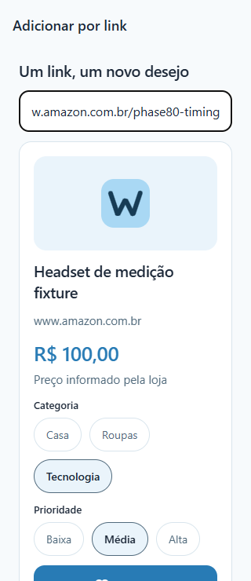
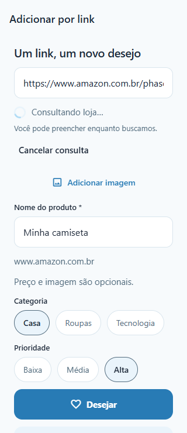
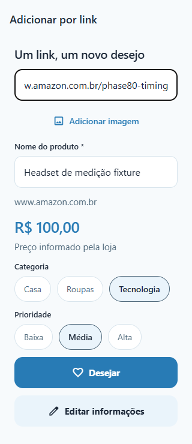
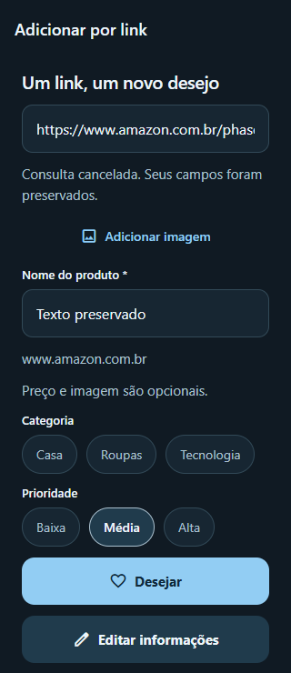
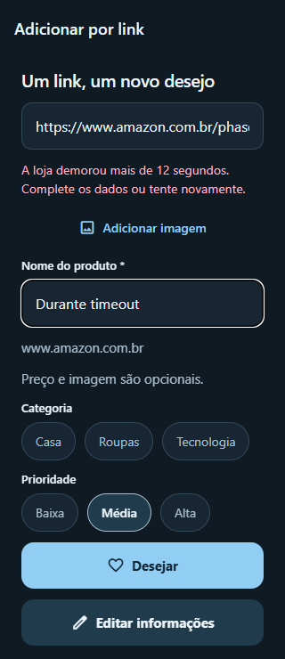
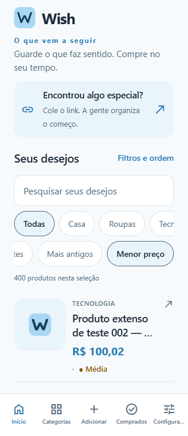
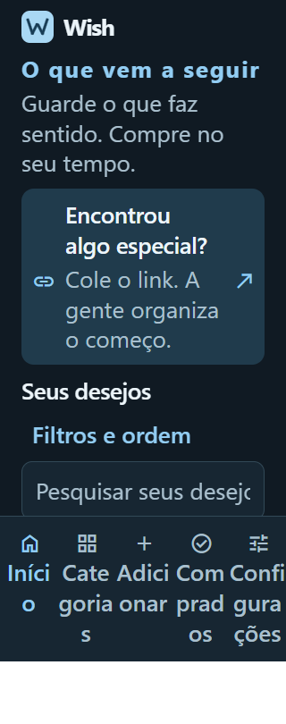
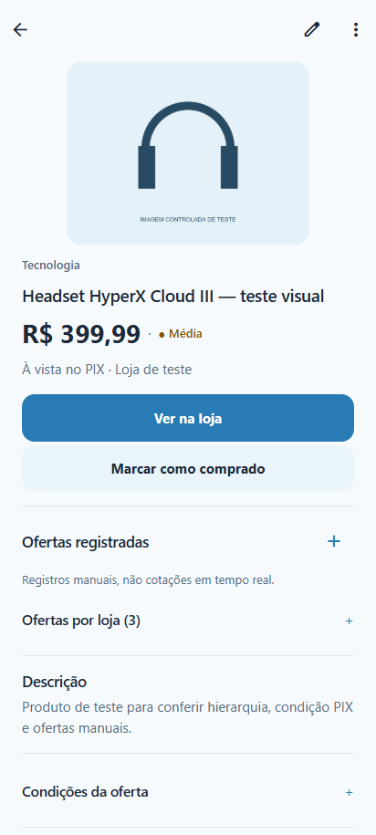
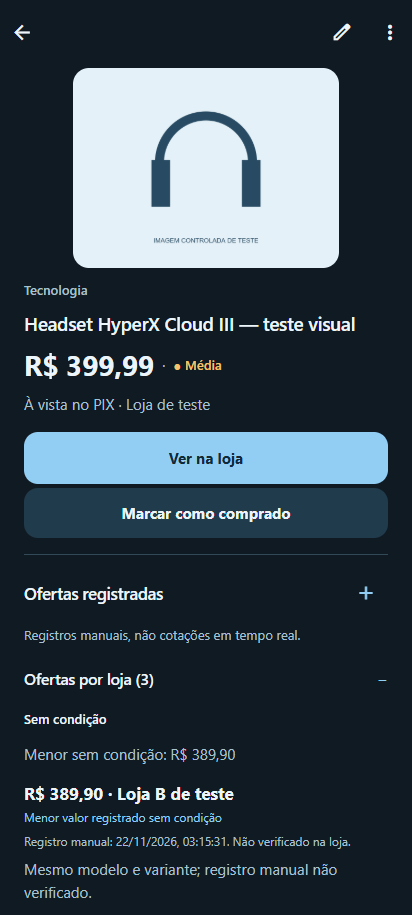

Capturas reais do aplicativo no Chromium com produtos e imagens sintéticos. Referência anterior identificada; demais capturas mostram a implementação. Não são mockups nem validação Android. Texto ampliado é CSS, não fontScale/TalkBack. Navegador, fonte e rolagem podem produzir recortes de viewport diferentes.
Relatório completo · Medições e resultados








